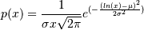
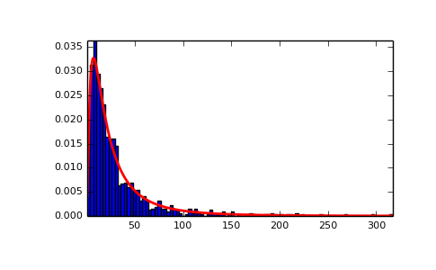
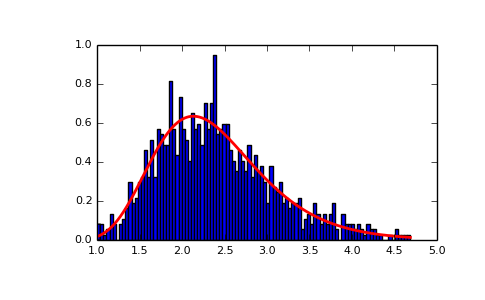

numpy.random.RandomState.lognormal¶
- RandomState.lognormal(mean=0.0, sigma=1.0, size=None)¶
Draw samples from a log-normal distribution.
Draw samples from a log-normal distribution with specified mean, standard deviation, and array shape. Note that the mean and standard deviation are not the values for the distribution itself, but of the underlying normal distribution it is derived from.
Parameters: mean : float
Mean value of the underlying normal distribution
sigma : float, > 0.
Standard deviation of the underlying normal distribution
size : int or tuple of ints, optional
Output shape. If the given shape is, e.g., (m, n, k), then m * n * k samples are drawn. Default is None, in which case a single value is returned.
Returns: samples : ndarray or float
The desired samples. An array of the same shape as size if given, if size is None a float is returned.
See also
- scipy.stats.lognorm
- probability density function, distribution, cumulative density function, etc.
Notes
A variable x has a log-normal distribution if log(x) is normally distributed. The probability density function for the log-normal distribution is:

where
 is the mean and
is the mean and  is the standard
deviation of the normally distributed logarithm of the variable.
A log-normal distribution results if a random variable is the product
of a large number of independent, identically-distributed variables in
the same way that a normal distribution results if the variable is the
sum of a large number of independent, identically-distributed
variables.
is the standard
deviation of the normally distributed logarithm of the variable.
A log-normal distribution results if a random variable is the product
of a large number of independent, identically-distributed variables in
the same way that a normal distribution results if the variable is the
sum of a large number of independent, identically-distributed
variables.References
[R164] Limpert, E., Stahel, W. A., and Abbt, M., “Log-normal Distributions across the Sciences: Keys and Clues,” BioScience, Vol. 51, No. 5, May, 2001. http://stat.ethz.ch/~stahel/lognormal/bioscience.pdf [R165] Reiss, R.D. and Thomas, M., “Statistical Analysis of Extreme Values,” Basel: Birkhauser Verlag, 2001, pp. 31-32. Examples
Draw samples from the distribution:
>>> mu, sigma = 3., 1. # mean and standard deviation >>> s = np.random.lognormal(mu, sigma, 1000)
Display the histogram of the samples, along with the probability density function:
>>> import matplotlib.pyplot as plt >>> count, bins, ignored = plt.hist(s, 100, normed=True, align='mid')
>>> x = np.linspace(min(bins), max(bins), 10000) >>> pdf = (np.exp(-(np.log(x) - mu)**2 / (2 * sigma**2)) ... / (x * sigma * np.sqrt(2 * np.pi)))
>>> plt.plot(x, pdf, linewidth=2, color='r') >>> plt.axis('tight') >>> plt.show()
(Source code, png, pdf)
Demonstrate that taking the products of random samples from a uniform distribution can be fit well by a log-normal probability density function.
>>> # Generate a thousand samples: each is the product of 100 random >>> # values, drawn from a normal distribution. >>> b = [] >>> for i in range(1000): ... a = 10. + np.random.random(100) ... b.append(np.product(a))
>>> b = np.array(b) / np.min(b) # scale values to be positive >>> count, bins, ignored = plt.hist(b, 100, normed=True, align='mid') >>> sigma = np.std(np.log(b)) >>> mu = np.mean(np.log(b))
>>> x = np.linspace(min(bins), max(bins), 10000) >>> pdf = (np.exp(-(np.log(x) - mu)**2 / (2 * sigma**2)) ... / (x * sigma * np.sqrt(2 * np.pi)))
>>> plt.plot(x, pdf, color='r', linewidth=2) >>> plt.show()

{kind=link}
{kind=link}